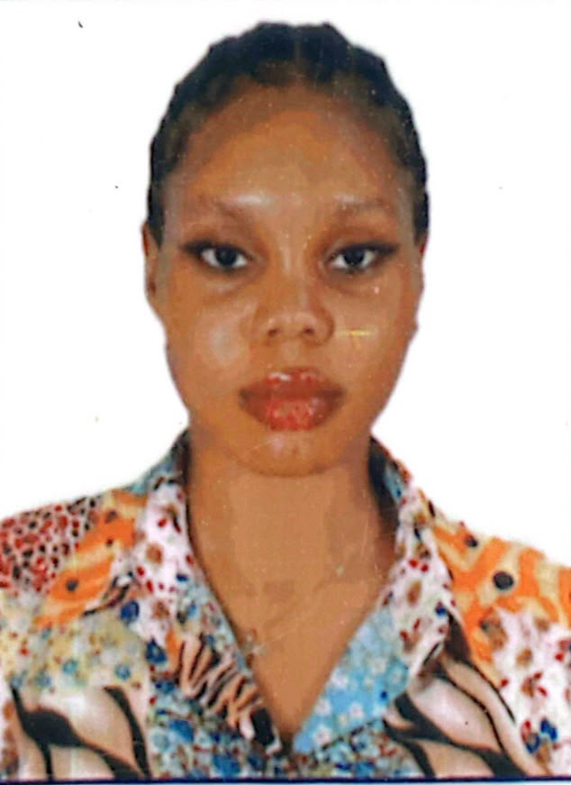

✦ MEDICAL SCIENCE MEETS TECHNOLOGY ✦
Hello, I'm Shalom.
Welcome to my space, where learning, creativity and ambition come together.
I'm a student with a passion for learning, creativity and personal growth. As I explore the worlds of medical science and technology, this portfolio showcases my journey, interests and the projects I create along the way.
Get to Know Me
Want to hear a little introduction from me? Press play!

A Little About Me
My name is Ikhu-omoregbe Shalom. I am a student currently pursuing Medical Laboratory Science and Computer Science. I enjoy learning, exploring new ideas and discovering opportunities for personal growth. I am particularly interested in the connection between healthcare and technology, and I hope to build a career that brings both fields together. Outside academics, I enjoy dancing and singing. I believe in continuous learning, creativity and becoming a better version of myself.